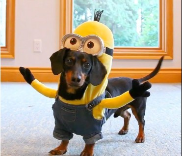
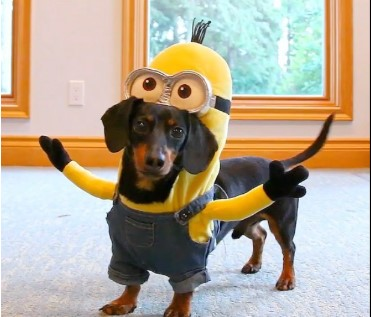

Yugi

Yugi is a 7 year old chihuahua who loves love and adores attention. A member of the sassy dog community, he is full of personality and character with a response for everything. Nicknamed King Yugi, he holds himself as a true royal and leader of the home, being given all the luxuries in life by his humans.
With the ability to love beyond his small body, Yugi is an attached lap dog that loves to be your sidekick. Protective, caring, and cuddly, there is never a time he isn’t there to support you and is always prepared for a short-notice nap time.
Photo Gallery


Likes
Luna

Luna is a German shepherd mix and a fireball of energy. Oftentimes, destroying anything in her path she will take and hide all your socks, shoes, and clothes for her to chew on. She loves playing catch at the park, it always gives her the zoomies.
Luna is a very jealous, loving, and protective dog. She really embraces her inner chihuahua and will bark at any stranger, car, or noise at night. She makes the perfect guard dog. But she is not at all aggressive. Luna is all bark no bite!
Photo Gallery


Likes
- Chicken
- The park
- Belly rubs
Dukey
Dukey is a 12 year old Pug, Jack Russell mix and lives with me and my family in Ireland. He is a very small dog, but acts much bigger than his size. He may look like an old man but still has the personality of a new born puppy.
Dukey`s favorite treat are rich tea cookies, as well as anything that falls off of the table at meal time. The rest of the family may call him the family dog, but both him and I know he`s really my dog, and one of my best friends.
Photo Gallery


Likes
- Cookies
- Blankets
- Walks (but not long ones)
Terry

Terry is a playful and spirited dachshund that loves to play fetch with his bone or tennis ball. He loves wandering in forests and finding large sticks to take home. His favorite foods are kibble and peanut butter. Terry will run around frantically when it’s time to eat at home.
My family found Terry at a shelter and decided to adopt it. He was 4 months old and is now 8 years old. Terry knows how to swim, but we don’t tend to go often. Terry got poison ivy once; however, he quickly recovered and has been doing great since
Photo Gallery

 


Likes
- Fetch
- Eating
- Belly Rubs
Bacon Q Dog

Bacon Q. Dog is a 9yr old labradoodle. He prefers to spend his days lounging among the three different beds/couches that his family has gifted him. He enjoys a walk or two around the neighborhood, as long as he can pretend that he doesn't see any of the other animals to avoid the embarrassment of not wanting to admit he has no wolf-like skills in chasing them.
At night just as the rest of the family is ready to relax, Bacon suddenly wants to release all of his energy. He will place his toys on a mini couch and frantically drag the couch around, giving his toys "a ride." There is also a lot of rolling. Lots and lots of rolling.
Photo Gallery


Likes
- Belly rubs
- Playing tug-of-war
- Sneaking onto the couch
Leo

Guinea pigs are a naturally energetic animal, who spend up to 20 hours a day awake. Despite being awake for long periods of time, they naturally hide in their habitats, and can be difficult to see in their inclosures. Guinea pigs naturally are social creatures that enjoy socializing with other guinea pigs, in the wild they form packs of five to ten.
Leo is a half-lazy, half-lively guinea pig that either likes to run around on the floor, doing tiny hops, or likes to lay down in the cage for hours at a time nibbling at hay. His favorite hobby is eating, and he can tell whenever someone is about to give good to him by waiting at the end of the cardboard box patio he has attached to his cage.
Photo Gallery


Likes
- Lettuce
- Tiny Hops
- Nap Time
Chunky Doll (Chonks)
Chunky Doll or as he prefers to respond to, Chocks, is a 4-year-old ragdoll. His name was inspired by his breed and looks. As a kitten, he was even chunkier and blended right in with a fluffy white rug we had that he loved playing hide and seek in. He’s a very lazy but playful cat, only playful when he feels like it.
He’s a pretty but very difficult cat as he’s white but hates showers and loves rolling around in the house collecting dust. To get him into a bath we often have to lure him in with fake human treats. And even then he jumps right out of the bath and runs around the whole bathroom making the floors wet. Nevertheless, he’s a very soft, cuddly, and loving cat.
Photo Gallery


Likes
- Human treats
- Naps
- Cuddles